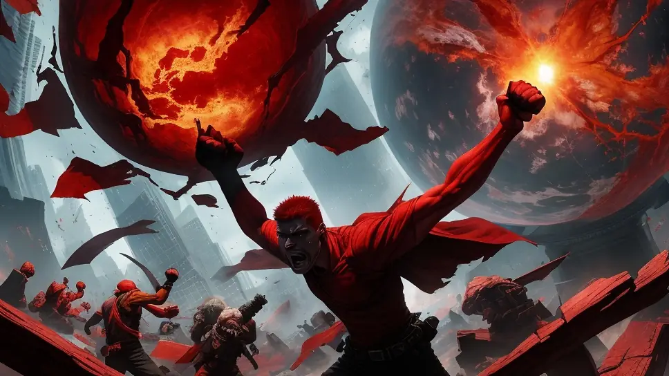
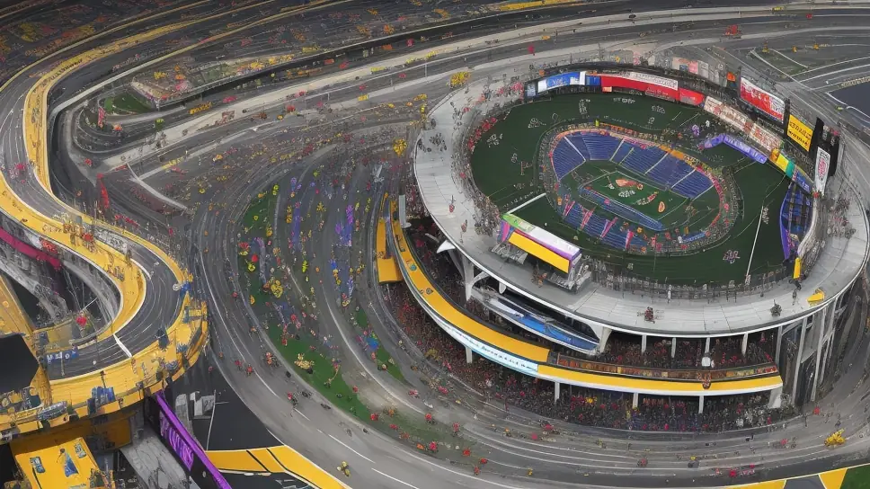
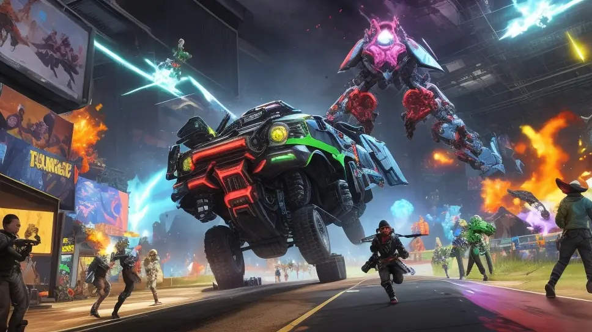
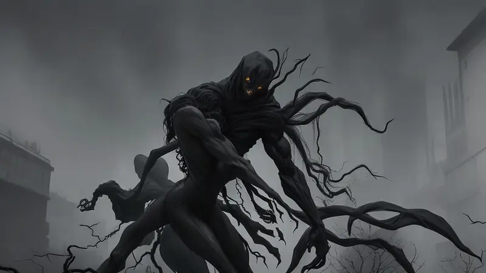
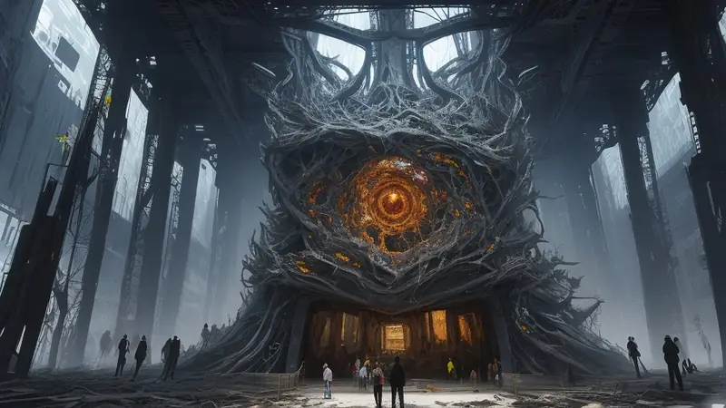
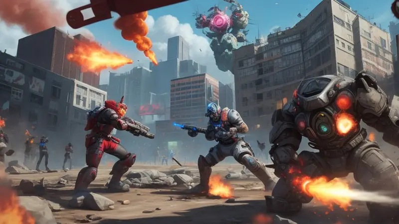
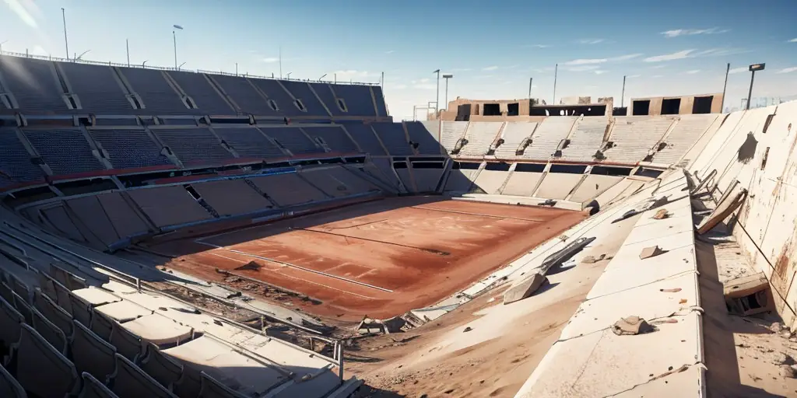

I’m rightly angry about competition

In a previous topic titled "It's forking that drives innovation, not competition!" I mentioned how the idea of “healthy competition” is total bullshit.
This particular topic enrages me to no end so I'm not going to hold back or sugar coat anything. If this upsets you then fuck you and listen up, because I've had enough of competition causing harm in our world on an industrial scale.
In that topic I also said how this audio by Alfie Kohn (No Contest: The Case Against Competition) single handedly caused me to stop playing competitive multiplayer games for good. And I mean all competitive human vs human games; in video games, in real life tabletop stuff, card games, you name it. All of them.
If you're currently playing any such games, that might seem a bit extreme to you. You might even retort with "muh sportsmanship" or "muh friendly competition" like a fucking imbecile, unable to notice that competition by its very core is inherently breeding toxicity and animosity between people.
Competition is an artificial invention made by (dumb) humans as a (poor) attempt for us as people to bond with each other and improve our skills. It is not a natural thing, it is not helpful as you may have been told about by others.
The problem is that there are biases and logical fallacies that people fall victim to in this world. This is common because most people would rather save energy and adopt an existing "truth" than actually use their own brains, often to their own detriment.
In more sinister cases, competition has also been used intentionally to divide and distract people to make them easier to control by pitting people against each other. It's far easier to manipulate or distract someone that is distracted and busy than it is to try that with a fully attentive and relaxed person.
The messed up part is that some people may be unknowingly helping someone else benefit from this while themselves thinking they're being a good person and doing the right thing.
Competition - a bundled, unnecessary evil
I used to be oblivious too - how could anyone not be; competition is practically bundled with everything and anything, be it video games, olympics, competitive sports, corporate struggles, school activities, various organized events, job seeking, relationships and so on.

It's difficult these days to not have someone try to force competition down your throat, normalize it for you and say that this is how things are and how they always will be.
The keyword here is "bundled" as that is what is really going on. When you see competition appear somewhere, it's usually there as a bundled unnecessary addon.
Often the case is that we all have been so deeply indoctrinated that trying to imagine something without competition being in it feels insurmountable, even impossible. Peer pressure and societal conditioning over the years is hell of a thing, it's not that simple to just snap out of it.
I am intentionally being provocative here to try to startle you to turn your brain on and think after reading this article if competition is really serving you or are you serving someone else.
My own journey of discovery in competitive play

I used to play multiplayer human vs human games too, both board games, card games and online video games. The thing that struck odd to me was that whenever I participated in these activities or observed others play, there was this uncanny phenomenon that the activity was somehow bringing out the worst in the participants as if by magic.
This was strange to me as if I confronted them and ask them about it, they'd agree that its dumb to behave that way and not okay. They couldn't give a straight answer why they'd turn into a jerk, often brushing it off with the infamous "it's just a game, we're having fun" reply.
Furthermore, this happens during a leisure time activity, during our free time that is often limited and is meant to be the time to gain enjoyment that work or school life usually denies us. Yet I'd often sit down to play a competitive game and somehow feel agitated and angry at the behavior the other participants had shown during the session which made me feel upset during an activity that was supposed to have the opposite effect.
It didn't matter whether I was doing well or doing poorly; If I was performing excellently, people would try to votekick me, falsely accuse me of cheating, say hurtful things and display disgusting traits that were aimed at making me feel awful. If I did poorly, I'd be mocked, belittled, abused and see this awful behavior again.

It didn't matter who I'd play with; whether it was people I knew, people I didn't know, whether we were face to face or communicating via ingame actions or text chat messages. It seemed as if the culture of violence and abuse towards others was being spurred by some unseen force, since these people would be fine outside this activity somehow.
What was strange is that none of these qualities appeared in places that did not involve competition between people. It was bizarre to play a competitive game, then go to singleplayer, collaborative or cooperative based communities and witness them being wholesome and friendly, a far cry from the toxicity I saw in the competitive game. To further make things odd, these games weren't shy with brutal ingame violence, gore and edgy themes.
For the longest time, I had been walking into competitive games, playing them, enjoying the impressive audiovisual feast they provided, the cool gameplay mechanics, the amazing wealth of content, the exciting different features to interact with and even some of the metagame aspects had a great elements in there, yet overshadowing all of this was that eerie toxicity that seemed to be coming out of nowhere. It's like something was poisoning the well.
Why would we as privileged humans spend our precious and rare free time on something that poisons us?
Why should we be ok with it and not look into it and try to make it better?
By complete chance, I had stumbled upon a review of Alfie Kohn's book, recommended through a completely different thing I was following at the time and it gave me the definitive answers for what was going on. If you're already listened to the audio I linked, then you know the details.

Turns out the source of the problem was in the competition itself. It was being masked by all the impressive artistic and technical work done by talented individuals that unwittingly had succeeded in creating such a beautiful and functional audiovisual interactive facade that it made it difficult to dare question the rotten core inside of it all.
Competitive games - always doomed to self-destruct and sabotage themselves

The saddest part is that the core of a game could be used to amplify all this amazing talent by artists, coders and designers to make for a much better experience that achieves more than a competitive game ever could, but here they are being held back by the competition driven core, essentially wasting their effort in keeping something alive that is self-destructive.
The thing I always found bizarre is how there'd be this recurring headline about how a once-popular competitive game "died" because people stopped playing it... and for some reason no one seemed to notice anything wrong about this, just accepting that it is normal and unavoidable. If a game was good, why would people stop playing it? Why would they stop making content for it? Why should it ever die?
What I observed that is a very distinct lifecycle:
- A fresh new competitive game is released, everyone is new at it and the playing field is mostly fair - anyone has a real chance of winning. Memes flourish, new updates keep the thing fresh and people seem to be having a good time having engaging moments of play where none of it is taken seriously - people are just content with the new thing, exploring it with wonder - like a honeymoon phase of sorts.
- Later, people get accustomed to the mechanics and start to focus on mastering them or finding other ways to ensure victory. Some people begin to get really good that it becomes too intimidating or unfeasible for others to keep up. Playerbase begins to decline.
- A rise of hackers try their best to circumvent lack of time and skill through the use of cheats to keep up with the rest. The cheaters are often harshly judged and outright forbidden from playing the game, commonly getting permanently banned and losing access. They may even lose any money they paid for the experience, further fueling their bitterness and discouraging them from re-entering. Playerbase declines even further.
- Lastly, only a select few dominate the game, giving rise to elitism and bringing out the worst toxic attitudes from individuals as a once happy place has becomes a harsh mentally asphyxiating scene where anyone not fitting in with the elite is harshly judged and shunned, discouraging them from playing the game further. Playerbase declines.
- Some last vestiges of the community recognize the toxicity and try to combat it by trying to improve the onboarding experience for new players, but those joining in quickly notice that they are outclassed by the existing good players and feel a sense of condescending vibe as they notice that others are intentionally holding back themselves, creating a fake environment that doesn't feel genuine anymore. Those that try to stick with it are never in the majority. Ultimately the playerbase still keeps shrinking despite these attempts to save the game.
- Finally, another game comes out that is new and fresh for all players, causing people to flock to it to enjoy that brief honeymoon phase before eventually repeating the cycle described here. The old game, despite being fully featured, fully operational with full potential for new added content ends up being forgotten and abandoned even by the few that once dominated it.
Meanwhile, a singleplayer game is able to stay timeless, have a wholesome community and still be something that people return to play again and again. Same goes for online collaborative games that do not require the commitment and focus a cooperative team driven game does.
No winners. Everyone loses with a competitive game

To me, this cycle highlights that competitive games are a dead-end; their very core nature is for them to collapse upon themselves, making the potential years of artistic and coding excellence go to waste. This is on top of the already awful aspect of competitive games fostering toxicity by their very core nature too.
Ironically I heard people casually say certain competitive games can outright destroy friendships that people actively choose to avoid playing them.
Ultimately, no one wins when it comes to a competitive game, no pun intended.
The players end up engaging with a game where they are more likely to lose and leave the game feeling miserable. Those that win end up feeling "happy" at the expense of those who lost, which is arguably quite sadistic and upon realizing that, even the winner may feel like their "happiness" is dirty, tainted and shameful, greatly diminishing their rather short-lived joy.
Developers end up creating an expensive game that required heroic efforts by coders, artists, designers, musicians, sound designers, writers, marketers, publishers, quality assurance people and other disciplines to make it a reality, often sacrificing their own well being to complete it, only for the thing they've built to have an innate defect that dooms it to expire. This essentially requires the studio to do extraordinary overhauls to attempt to resuscitate a dying project over and over again, often throwing away a lot of expensive work done in the past to replace it with new things that are just as likely to lose their appeal as the old version just as quickly. It isn't a sustainable nor a smart way to work. It will be wasteful and the product will not have lasting power once it has run its cycle of self-destruction.
Overall, the amount of money wasted on developing competitive games is staggering considering the awful inherent elements they contain. The amount of societal damage they have caused is huge.
Here's a summarized list of damages that a competitive game directly causes:
- Generating unnecessary drama.
- Pushing people to a boiling point to do something stupid to themselves or upon someone else.
- Encouraging hate, division, toxicity and animosity between people that are otherwise friendly and caring.
- Literally encouraging abuse and other forms of violence towards others - "I win if you lose" Or the worse version - "I win if I MAKE you lose", depending on the game and its structure.
- Limiting innovation and potential in new game mechanics due to game balance concerns.
- Caused by the above point, forcing studios to find other ways to monetize the game than by adding new mechanics, content and features, instead opting for nonsense progression systems, vanity items and fluff content that never really evolve the game experience.
- Causing many engineers to suffer through having to spend their time working on anti-cheat systems that feel like the most pointless and stupid thing to have to deal with, taking time, money and resources away from adding more content into the game.
- Creating a situation where people can lose money for a product or service they paid for and become a societally hated person because this artificial environment create conditions that encouraged someone to get creative to keep up with those who have more time, better physical attributes and more money to have a chance at winning in the game, aka the stigmatized practice of "cheating" or "hacking", punishing their ingenuity in the face of unfair odds that were never in their favor to begin with.
- Making it a forbidden taboo to modify a multiplayer game for "fairness" concerns where same modifications, tool assisted speedruns and other creative things made by people are heralded as awesome things in singleplayer or collaborative games.
The competitive multiplayer games that last long are often able to do so because of the well-crafted art, sound, mechanics, features and systems. These elements allow the game to hang on for a little longer despite the competitive core, not because of it.
Future me: "I told you so." if you go make a competitive game anyway after this article
That's all I have to say on this issue. I know most of you will disagree and perhaps even hate me for this opinion.
Some will likely still bring up the confusion between conflict vs competition despite the audio dispelling the difference of those two at the very start. I won't bother responding to comments that got emotionally triggered and didn't hear what I nor the audio I linked had to say.
If you ever consider building a competitive game yourself, then you now have been informed of what you can expect.
Most of you will learn the hard way, unfortunately. For those that are wise enough to consider my words, there are indeed other ways of organizing a game than competition.
Turn your brain on and start using it. If you keep asking questions, eventually you'll be able to discover the answer to find a way to attain the benefits you may have enjoyed in a competitive game without needing any form of competition. You can look at my projects if you need a starting point for inspiration.
Talk about it
Questions, disagreements and ideas of your own are all welcome. Discuss this article with other readers on the Reactorcore Games Discord, follow new articles and dev news on Patreon, or write to me directly.